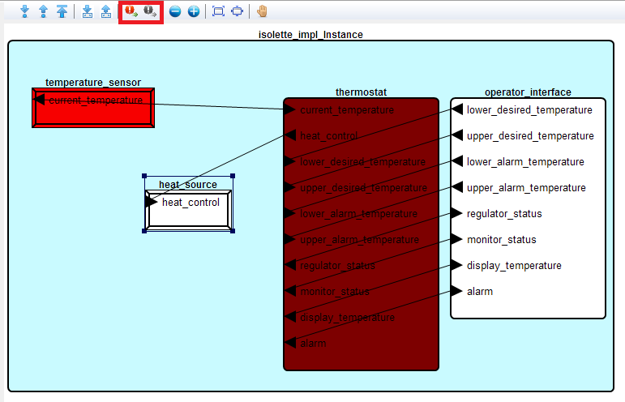
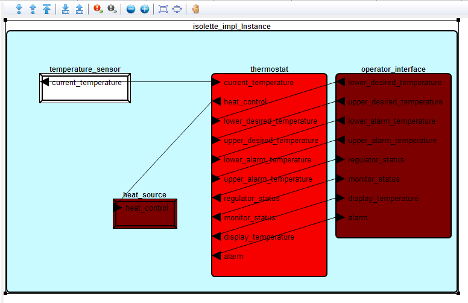

The Instance Model Viewer includes a functionality to view the errors risen from a component and their associated propagation. To use this functionality, you need to open the instance model in IMV. Then, to activate the view of an error propagation from a component, select the component that is the error source and click on the error button on the IMV toolbar, highlighted in red in the following picture.
The component source is highlighted in light red while the components impacted have a background color with dark red. In this example, the temperature_sensor is the error source and we see that it might impact the thermostat component.
The other example is shown below with the same example. Now, the error source is the thermostat example, the heat_source and operator_interface are the impacted components.
While being a prototype, the tool has the following limitations: